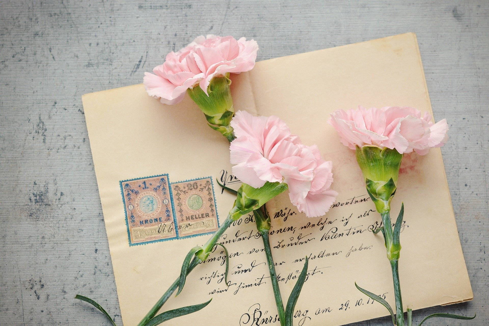

<!DOCTYPE html>
<html>
<html lang="en" dir="ltr">
  <head>
    <meta charset="utf-8">
    <title>전역전 마지막 편지</title>
  </head>

</html>
<head>
  <meta charset="utf-8">
</head>
<body>
  <h1>병장 손범택</h1>
    <a href="index.html"></a>
    <br>(이미지 클릭시 다음장으로)
  <h2>진~~~짜 마지막</h2>
  <p>
    <strong>사랑하는 부모님께</strong><br>
    어머니 아버지 저 진짜 열심히 한거 같아요, 이제 집도 가겠다. 한번 생각나는 대로 써봤는데,
    쫌 쎈거 같기도 하고 걱정하셨을 내용도 많았던거 같네요, 뭐 어때요? 집가는데, 좋은게 좋은거죠,
    아 참고로 이거 군대에서 심심해서 한번 만들어봤어요, 생각보다 괜찮죠?, 이 주소만 있으면,
    언제 어디서든 볼수 있다고요~~, 세상 참 편리해 졌어요.ㅋㅋㅋ<br>
    어처피 나가서도 많이 말하고 그럴텐데 긴 말은 안할께요.
    군대에 있는동안 기도 많이 해주시고 안부전화 자주 주셔서 감사해요.
    나가서 더 잘해드릴께요.<br>
    <strong>아들 범택 올림.</strong>
  </p>
